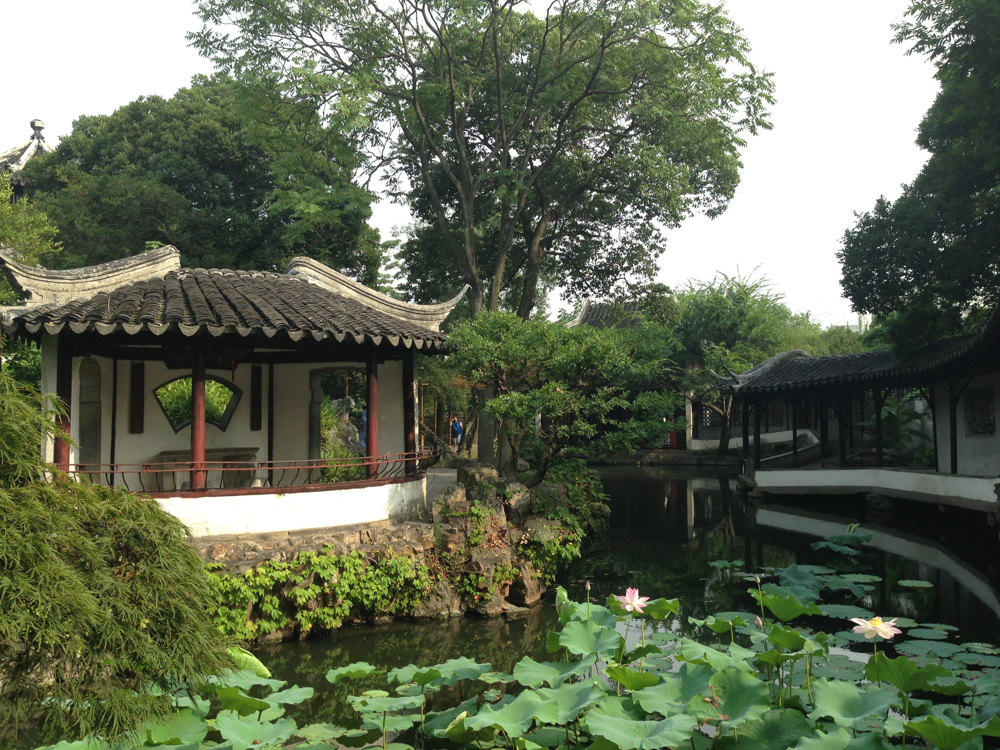

简介
位于江苏省苏州市姑苏区东北街178号。明正德四年（公元1509），明代弘治进士、明嘉靖年间御史王献臣仕途失意归隐苏州后将其买下，聘著名画家、吴门画派的代表人物文征明参与设计蓝图，历时16年建成，借用西晋文人潘岳《闲居赋》中“筑室种树，逍遥自得……灌园鬻蔬，以供朝夕之膳……此亦拙者之为政也，”之句取园名。 后屡易其主，并几度入官，迭经兴衰分合。1860年至1863年曾属太平天国忠王府。1951年整修。

建筑特色
拙政园占地面积78亩（52000平方米），全园分东、中、西三部分。另有住宅部分现为园林博物馆展厅。东部明快开朗，以平冈远山、松林草坪、竹坞曲水为主。中部为拙政园精华所在，池水面积占1/3，以水为主，池广树茂，景色自然，临水布置了形体不一、高低错落的建筑，主次分明。西部水池呈曲尺形，其特点为台馆分峙，回廊起伏，水波倒影，别有情趣，装饰华丽精美，主体建筑为靠近住宅一侧的卅六鸳鸯馆。
拙政园的整个环境虽由人做，自然生态的野趣却十分突出，尚保留着明代建园之初的风范，被认为是江南古典园林的代表作和中国园林艺术的珍贵遗产。
荣誉
1961年，拙政园被中华人民共和国国务院公布为第一批全国重点文物保护单位。1997年12月，作为苏州古典园林典型例证，经联合国教科文组织批准，拙政园与留园、网师园、环秀山庄共同列入《世界遗产名录》。 2007年，苏州园林（拙政园－留园－虎丘）被评为国家AAAAA级旅游景区。